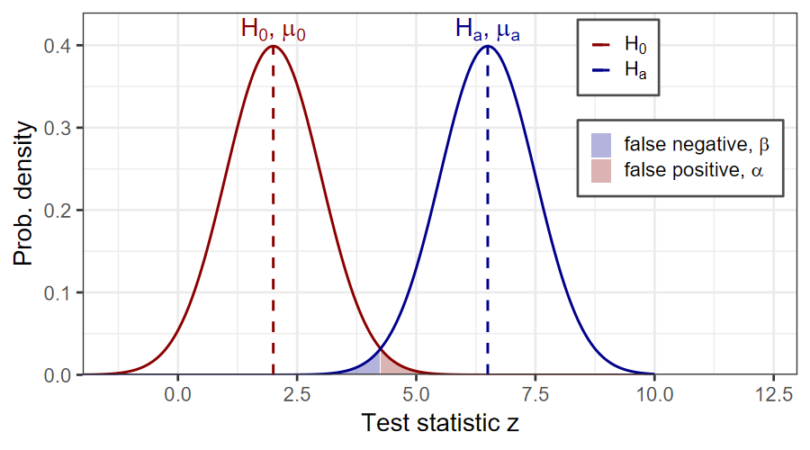
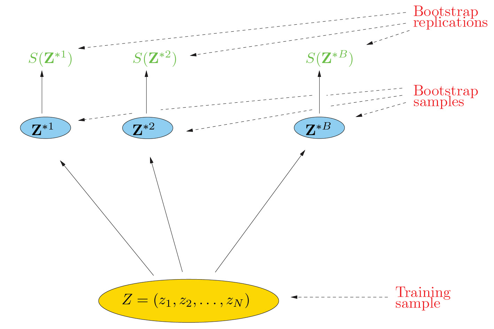

\(T\)-statistic
\[ \hat{T} = \frac{\overline{t_A} - \mu_A}{S_A / \sqrt{n_A}} \]
Compute \(\mathbb{P}(t > \hat{T}) = 1 - F_{t_\nu}(\hat{T})\), where \(F_{t_\nu}\) is the cumulative distribution function of the \(t\)-distribution for \(\nu\) degrees of freedom.
Sample some data:
Run a t-test
##
## One Sample t-test
##
## data: x_A4
## t = -1.8837, df = 3, p-value = 0.9219
## alternative hypothesis: true mean is greater than 622
## 95 percent confidence interval:
## 587.5994 Inf
## sample estimates:
## mean of x
## 606.7063Now try with 12 samples
##
## One Sample t-test
##
## data: x_A12
## t = 4.4402, df = 11, p-value = 0.0004974
## alternative hypothesis: true mean is greater than 622
## 95 percent confidence interval:
## 650.0727 Inf
## sample estimates:
## mean of x
## 669.1384Compute the two-sample \(T\)-statistic
\[ \hat{T} = \frac{\overline{t_B} - \overline{t_A}} {\sqrt{\frac{S_B^2}{n_B} + \frac{S_A^2}{n_A}}} \sim t_{\nu'} \] where \(t_\nu'\) is the student-t distribution and \(\nu'\) depends on what we know about whether \(t_A\) and \(t_B\) have the same variance.
R will calculate \(\nu'\) so we don’t have to worry about the formulas in the textbook
Try it in R
##
## Two Sample t-test
##
## data: x_B and x_A12
## t = 6.8518, df = 19, p-value = 7.715e-07
## alternative hypothesis: true difference in means is greater than 0
## 95 percent confidence interval:
## 71.08198 Inf
## sample estimates:
## mean of x mean of y
## 764.2136 669.1384The p-value is 7.7×10-7, so we reject the \(H_0\) because there is only a 0.00008% chance that we’d see this data if \(H_0\) were true.
Our statistical tests either reject \(H_0\) or don’t reject it.
Four possible outcomes:
| Decision | \(H_0\) is true | \(H_0\) is false |
|---|---|---|
| Positive: Reject \(H_0\) | False positive | True positive |
| Negative: Don’t reject \(H_0\) | True negative | False negative |

Power: Probability of rejecting \(H_0\):
\[ 1 - \beta = \mathbb{P}(\text{rejecting } H_0 | H_a \text{ is true}) \]
We often use power analysis when designing an experiment to estimate how large a sample we need (how many observations) to detect an effect with confidence.
Z-test: Compares two means when the variance is known
t-test: Compares two means when the means and variances are unknown
F-test: Compares variances of two samples from two populations:
\[ \left\lbrace { \text{Sample 1,}~\sigma_1, n~\text{observations} \atop \text{Sample 2,}~\sigma_2, m~\text{observations} } \right. \quad F_{m,n} = \frac{S_1^2/\sigma_1^2}{S_2^2/\sigma_2^2} \sim \frac{\chi_{n-1}^2}{\chi_{m-1}^2} \]
Compare histograms of observed and theoretical probability mass
If the fit is good, the # of observations \(O_k\) in each bin \(k\) should be close to the theoretical expectation \(E_k\)
\[ \Xi^2 = \sum_{k = 1}^{N_b} \frac{(E_k - O_k)^2}{E_k} \sim \chi^2_{\nu - 1} (O, E), \]
where \(\nu = N_b - n_p\), \(N_b\) is the number of observations and \(n_p\) is the number of parameters you estimate to decribe the theoretical probabilty distribution.
In R, we use the chisq.test() function.
Kolmogorov-Smirnov Test
\[
D = \max_x \left| F_n(x) - F(x) \right|,
\] where \(F_n(x)\) is the
empirical cumulative distribution function for your observations and
\(F(x)\) is the theoretical cumulative
probability distribution fucntion.
Measures the greatest discrepancy between empirical and theoretical cumulative distributions
Similar to measuring the greatest deviation from a straight line in a Q-Q plot.
Reject \(H_0\) at level \(\alpha\) if
\[ D > C_\alpha = \frac{k_\alpha}{\sqrt{n} + 0.12 + 0.11 / \sqrt{n}}, \] where \(n\) is the sample size and \(k_\alpha\) is a function of \(\alpha\).
The K-S test is universal: You can compare a sample of observations to any theoretical distribution
Disadvantage: The test doesn’t account for reducing the degrees of freedom when you use observations to estimate parameters in \(F(x)\).
In R, use ks.test()
Each ball can only appear once in the final sample
\(m \le N\)
There are
\[ \left(N \atop m\right) = \frac{N!}{m! (N-m)!} \]
different ways to sample \(m\) balls.
\(\left( N \atop m \right)\) is called the binomial coefficient
This mixes up the two parts.
The number of possible samples in the surrogate ensemble is
\[ N = \left( n_1 + n_2 \atop n_1 \right) = \left( n_1 + n_2 \atop n_2 \right) = \frac{(n_1 + n_2)!}{n_1! n_2!} \]

library(boot) and use the function
boot() or load library(bootstrap) and use the
function bootstrap()
Instead of drawing samples of \(N\) values from the original \(Z\), make \(N\) samples of \(N-1\) values, each of which leaves one value out (leave-one-out sampling).
\[ \text{sample}_j = (z_1, z_2, \ldots, z_{j-1}, z_{j+1}, z_{j+2}, \ldots, z_N) \]
These days, the bootstrap is much better than the jackknife, but there are other useful applications of leave-one-out sampling.